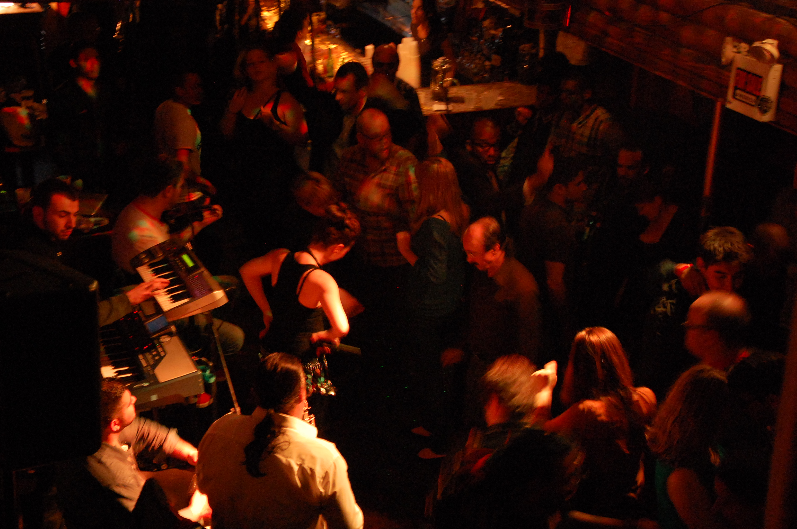

On a recent walk down a long stretch of blocks on Roosevelt Avenue in Queen's, we encountered something odd. We were standing in front of a Bodega, in the area known as Jackson Heights, and realized that the signage for the store proclaimed to cater to a multitude of disparate or traditionally disagreeing cultures: Spanish, American, Bangladeshi, Indian, and Pakistani. Looking around, we noticed that the bodega was hardly the only establishment catering to a mashup of culture, and that in fact, Jackson's Heights was dominated by odd pairings of cultures existing and working side-by-side each other.
It's not unusual to find culturally diverse neighborhoods in New York City, but often individual cultures stick together. What was it about this area that brought together Mexicans and Japanese, Ecuadorians and Tibetans, and the Pakistanis and and the Indians.


In my part of the world, all Indians grow up with an ingrained emphasis on the border with Pakistan. Since both nations gained their independence in 1947, the two countries have had several political and military disputes. The Line of Control in the heavily militarized Kashmir has been breached several times in the last few decades. The animosity between the two nations makes is difficult for the people to see each other as anything but enemies.
In New York City, however, the dynamic works different. We travelled to Haandi, an Indian-Pakistani restaurant in the heart of Curry Hill, Manhattan. The restaurant caters to the cab-driving crowd, most of whom are of South Asian descent. The cabbies come to Haandi between shifts to grab meals. Indians and Pakistanis sit together splitting samosas and kebabs. While their nations battle each other politically, people from both sides of the border are friends here. They quickly find kinship with each other in a foreign place.
After a delicious plate of kheer, we met Sikandar Butt, a Pakistani regular at Haandi. He took us across the street to a Paan Shop (the South Asian equivalent of a tobacco shop), owned by his Indian friend Patel Jayesh. Sikandar told us how his Pakistani and Indian friends frequently spend the whole night at this shop, playing cards, drinking, chewing beetle nut, and sharing the day.
The man making the Paan that night was Kashimiri Danyal Butt. I joked that there was no one better to speak on the subject of Indian-Pakistani politics than someone from Kashmir. He laughed, and shared his thoughts on the bitterness between the two nations.
By the end of the evening, it was pretty clear that the boundaries darkly drawn by their governments mean nothing to the regulars in this part of Curry Hill. As Indian shop owner Patel Jayesh simply put it, “We love each other”.


It’s 11:30 pm on a recent Thursday night on the Lower East Side. Dressed in clubbing attire—tight jeans and shiny miniskirts—two American girls hesitantly approach the entrance of Mehanata, aka the Bulgarian bar because of its hard-to-pronounce name.
While the rest of the crowd shuffles into the dodgy looking building, the girls are desperately trying to get a sneak peek of what’s inside. After another minute of struggle on the club choice, they hand over their IDs to the bouncer.
Being Bulgarian, I walk straight in, thinking I know what to expect. Mehana, means “tavern” in Bulgarian, so I could easily picture a bunch of burly Eastern Europeans, sitting idly on the tables and complaining about their immigrant lives in the States and daydreaming about their home countries over a bottle of rakia-- a strong grape brandy which tends to even further fuel such disputes.
I was wrong. As soon as the two girls open the heavy, metal door of the club, somebody’s hands pull them right into the swirling crowd on the dance floor.
My ears pricked up the second I heard the familiar sound of Gypsy fusion music blasting. It almost feels like home -- a small Gypsy band playing live and cornered in the small space between the bar and the table. But the crowd is different and very unlike those you see in Bulgaria.
I’m mesmerized by the colorful mixture of hipsters, heavily-tattooed Rasta men, a bunch of German and French tourists, gay couples, and 40-something men in dress shirts, perhaps coming straight from work. The handful of Eastern Europeans there are all dancing.
I can’t help but think how strange it is to be seeing this in New York, yet at the same time, New York may be one of the few cities able to blend such different cultures.
It’s possible that the staff at Mehanata sees a wider diversity in a night than you’d see in Bulgaria for a year. It’s quite amazing. A bunch of locals and internationals celebrating the culture of a country or a region, that most of them probably couldn’t point out on a world map.
Mehanata has been a home to underground musicians for years. It gradually became the breeding ground for immigrant punk bands and wild DJ parties lasting long into the night and topped with an endless supply of liquor. The popular DJ Eugene Hutz started his Gypsy punk band, Gogol Bordello, in the basement of the bar. A few years ago, he told the New York Times: “I was a Ukrainian D.J. spinning Gypsy records in a bar in Chinatown. It doesn’t get more New York City than that.”
The bar, which has been open for around 15 years, was originally located on Broadway at Canal Street in Chinatown. In 2006, Mehanata went through a rough patch. The construction of a new hotel forced the owners to move the bar to its current location on Ludlow St., only to be shut down hours after the grand opening, as two policemen noticed that the club didn’t have a liquor license.
Now that those series of unfortunate events are in the past, the bar continues to welcome a quite diverse crowd. Tonight, a sparkling mixture of cultures, nationalities and characters are dancing their way through the night.
It feels good to know that this place is known as nothing else but the Bulgarian bar.
An ocean away, however, the picture is different. Bulgaria is deemed as one of the “bad boys” of the European Union – holding the top spot in all the wrong rankings: the poorest, the most corrupt, the least literate teenage students, etc.
Almost 24 years after the fall of Communism, the country still has a long way to go when it comes to organized crime, judicial reform and chronic nepotism. In a much more conservative and traditional society, discrimination towards minority groups is still a very common practice.
Gypsies are one of these minorities. I often get into arguments with friends who refer to them as, “those filthy Gypsies.”
I still remember when a few years ago, I interviewed the founder of a Gypsy brass orchestra from my hometown. The band made Gypsy music fans around the world jump up to applaud them, but when they go to the Sofia airport, they were frowned upon for being in their home country.
Ironically, the Bulgarian bar in New York has become famous among locals; not despite, but exactly because of the gypsy music it carries. Here the country has suddenly received a makeover and become a place for free expression and an incubator of all kinds of unexpected artistic collaborations.
The gay community is another group exploited in Bulgaria, yet accepted at Mehanata. Many of my gay friends at home are still afraid to come out of the closet because they fear bad treatment or even losing their jobs. Those who are open about their homosexuality get spat at or even beaten up just because they look gay.
It’s time to order. There is no Bulgarian beer at the Bulgarian bar. Typical.
Back from their break, Yuri Yunakov and the Grand Masters of Gypsy Music Band take their places on a makeshift stage.
In the Balkans, it’s usually all about politics and even today’s diplomatic relations between neighboring countries are strained because of historical and cultural disputes dating back centuries. Moreover, people from the Balkans often hold grudges and can spend hours passionately arguing about a petty event in Balkan history or why their nation is the greatest.
But under the roof of Mehanata, nationalities don’t matter. Every week, a band comprised of Bulgarian, Turkish, and Albanian musicians play together to entertain an American and international audience. The band’s lead singer, a young Turkish woman, performs several pieces in perfect Bulgarian. She loves chalga—modern pop music mixed with Balkan, Gypsy and Oriental beats—and carefully lists the names of her favorite chalga singers. Yet, she has never been to Bulgaria before. However, she loves Bulgaria, and the fact that I was born there immediately gets rewarded with a hug.
As usual, the most interesting conversation takes place at the smokers’ corner. A culinary discussion arises around the origin of the word musaka. A quick Google search makes things even more complicated as Wikipedia states that musaka comes from the Greek word, which comes from the Turkish. This inspired a witty remark by one of the smokers that the dish should be called a shepherd’s pie. So is Mehanata, a cultural shepherd's pie, blending ingredients from all over the Balkans. Suddenly, a group of young women, hardly balancing on stilettos heels, gallop through the door in a cloud of Barbie-like soutfits of pink and purple sequins, and vanish in a taxi as swiftly as they had appeared.
Back in the bar: I’m waiting in line for the bathroom, when I strike a conversation with a young guy from Brooklyn. It’s his first time in the bar and he can’t even explain how he and his friends ended up here. To my surprise, he not only knows where Bulgaria is, but also tells me he knows “the most unusual” Bulgarian word.
I raise my eyebrow in doubt and he quickly proves me wrong by enunciating “chushkopek”. Chushkopek is a cylindrical appliance to roast peppers in, which is common in most Bulgarian houses. Who would have thought that a hipster living in Brooklyn would know that and is interested enough in the region to plan to visit the country this summer?!
As I’m drinking a shot of what turns out to be an expensive but rather poor-quality rakia, it strikes me this place is much more than a bar. It’s a vibrant multicultural institution. Fueled by New York’s diverse background, it has become a hub of its own underground culture and has created a community of liberal minded party lovers who are willing to dive into the culture of an obscure country like Bulgaria. For once, at least in New York, it was cool to be Bulgarian.


You would think that the church’s hard stances on homosexuality would provoke aversion among gay catholics. Yet, members of the organization Dignity NY believe there is no conflict between their faith and their sexuality.
Last Sunday, they welcomed us to one of their special services, which takes place every week at St. John’s In The Village Church. The mass was rather classic, respecting all the Catholic rituals. The only difference was the content of the prayers: equality for women, a peaceful 39th anniversary for their sister organization, Dignity Detroit, and strength for those who are considering suicide because their sexuality is not accepted. Rather unusual words for a Catholic mass.
Dignity’s secretary, Jeff Stone, pointed out, the group provides a space where LGBTQ Christians can feel safe while they practice their religion. Its influence impacts beyond the weekly mass: he says he met most of his friends through Dignity. Cookies and coffee are offered after every service.
Dignity NY has been around since 1972 and has hosted for the last 15 years. It is a branch of Dignity USA , which works for “respect and justice for people of all sexual orientations, genders, and gender identities” in the Catholic Church.
Recently, the Christian LGBTQ’s community faced strong opposition among the city’s clergy. Last week, a number of their supporters were threatened with arrest when they attempted to enter St. Patrick’s Cathedral in NYC.
The group demanded respect from their church by standing silently outside of mass with ashes on their hands. A symbolic response to New York Archbishop Timothy Dolan’s open letter titled “All Are Welcome,” in which he compared homosexuality to having “dirty hands,” stating that although the church loves its LGBTQ members, it cannot condone their “condition.” He argues that homosexuality is not consonant with God’s message that, “sexual acts are reserved for a man and woman united in the lifelong, life-giving, faithful, loving bond of marriage.”
Though Jeff Stone acknowledges the road is long before the gay community is accepted in traditional Catholic church, he hopes the changes he observes in society will reflect on the clergy.
NB: In order to respect churchgoers’ privacy, and because not all of its members are openly gay, we shot this video without revealing any identifying features.

French photographer JR began his career as a graffiti artist in Paris. Ten years later, he won a $100,000 TED prize for his work. He got that far by pasting oversized black and white pictures of people in public spaces. Some of his notable works in the Middle East, in Kenya, and in Brazil all engaged the local community in the photographs. He displays his work on every wall he finds, usually impoverished areas, like Rio’s favelas or Paris’ banlieues.
.jpg”){kind=link}
Currently though, his photos are displayed in Times Square, one of the world’s symbol of capitalism. It’s the latest stage of his global “Inside Out project”, which aims to “give everyone the opportunity to share their portrait and make a statement for what they stand for.”
Remaining independent from any brand or corporation is crucial for JR, who even refuses his pictures to be part of NGO’s campaigns. Seeing his simple black and white paper prints find a place amidst the sea of shiny billboards covering Times Square is somehow very satisfying.